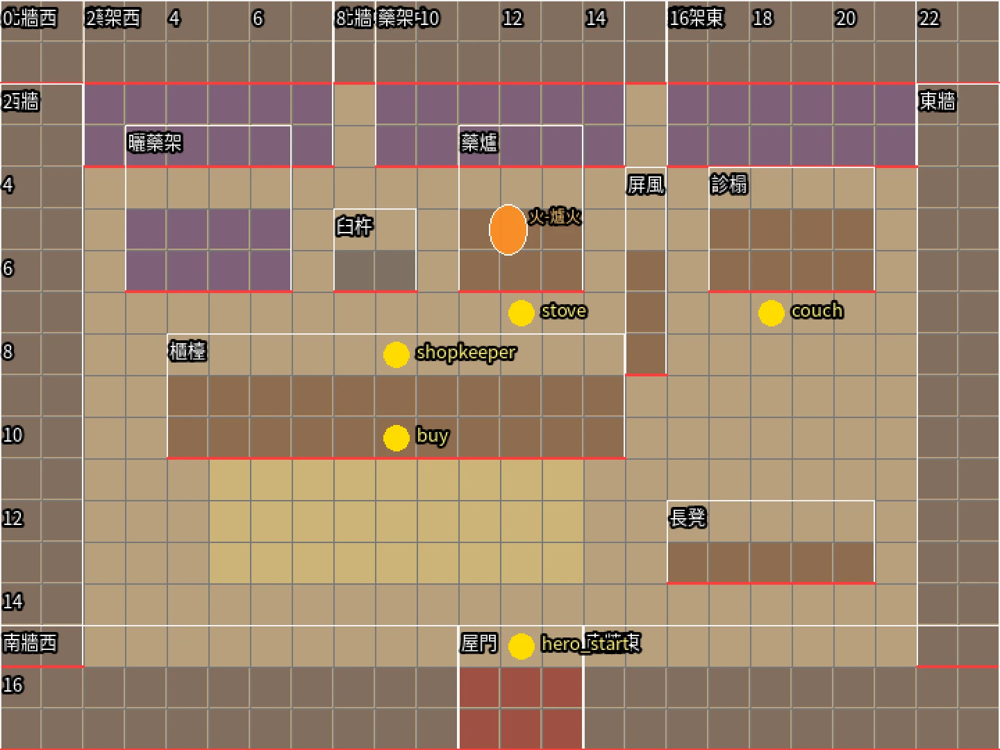

R4 藥鋪（第二章〈藥錢倒數〉抓藥）
從 B2 藥鋪門口進來。24×18 格（一格半公尺，從屋頂拿掉往下看），鏡頭比城裡近一點。現在遊戲裡藥鋪沒有屋內，只有一個藥鋪掌櫃站在街上；做好以後掌櫃站在櫃檯後面，抓藥時站在櫃檯前的蓆子上面朝上按。照你說的改過：櫃檯靠門、看病的在裡面。

- 前面（靠門）：櫃檯、長凳
- 一進門就是長木櫃檯（漢代的案，高到人腰），上面一具銅天平與砝碼、幾卷竹簡藥方、幾包包好的藥；掌櫃站在後面。櫃檯前一張舊草蓆，抓藥的人站在這裡；門邊東側一張長凳給等藥的人坐。
- 櫃檯後面：掌櫃的地方
- 北牆前三座藥架（陶罐口用布紮著、竹筐裝的根莖、布袋、捆好的乾草藥）；架子前面是曬藥的竹匾架、搗藥的石臼木杵、煎藥的小土爐（陶罐冒熱氣，爐火會發光）。不放百子櫃：一格一格抽屜的藥櫃是明清才有的。
- 裡面（東北角）：看病
- 一道木框屏風（漢代就有）隔開，屏風後面一張看病把脈的矮榻，榻邊小几、脈枕。從櫃檯東邊的走道進去。
- 其他
- 夯土地面；南牆正中是門。漢代就有賣藥的鋪子：韓康「採藥名山，賣於長安市」（《後漢書．逸民傳》）。
想說的（例如哪樣東西挪到哪、少了什麼）
我按的
按的時候頁面上還是第一版：櫃檯在屋子中間，診榻和長凳在南半邊。14:06 照我的問題重排成上面這張，重排後我沒有再按按鈕。
我在對話裡說的
- 14:02「照藥鋪 R4、軍侯的帳子 R3、魏家 R1／R2 的順序開始」：做了這一頁，先放藥鋪的色塊設計圖（20a65e98）。
- 14:06「診榻在比較外面，櫃台在比較裡面？？」：櫃檯靠門，櫃檯後面是掌櫃抓藥、搗藥、煎藥的地方，診榻放到東北角屏風後面（ae3c3f4c）。
- 14:43重排以後我回「可以吧，在城裡這個房子多大？也是 24 x 18 嗎？」：B2 街上的藥鋪改成三開間（7b4dbfec）。
R1／R2 魏家屋裡（老屋、修好）
最後做，劇情用得最多。